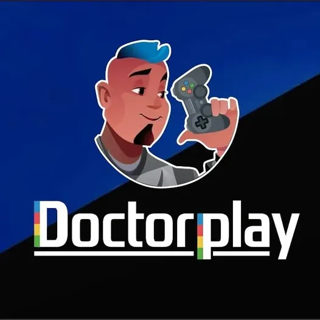
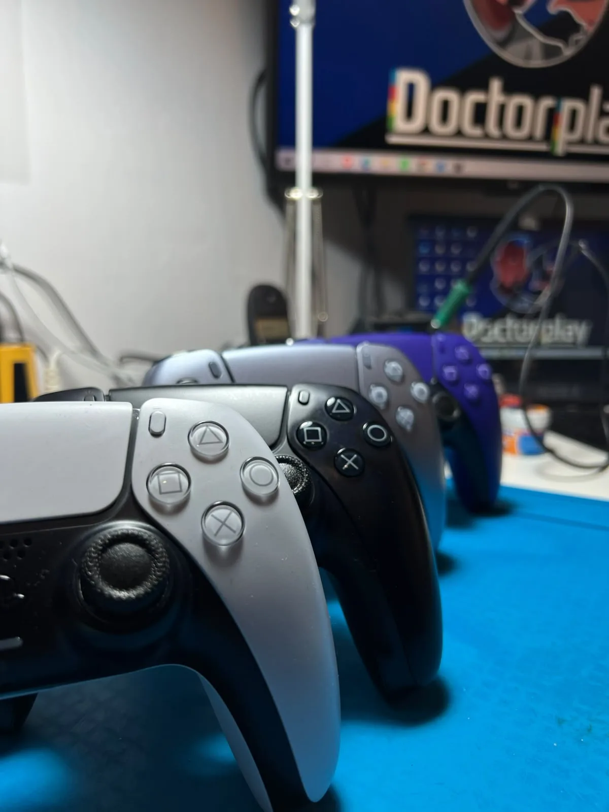
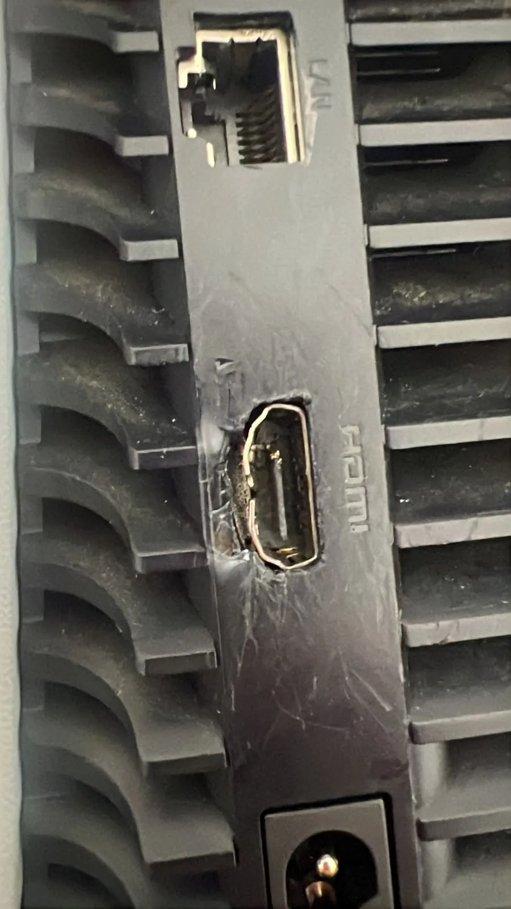
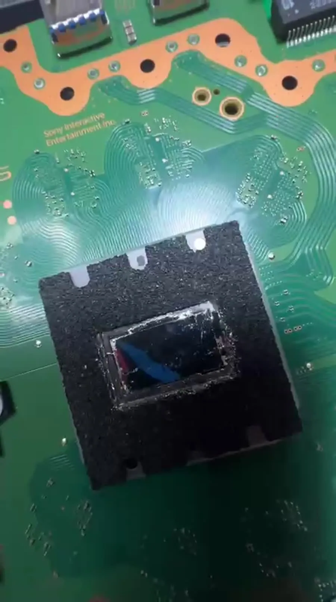
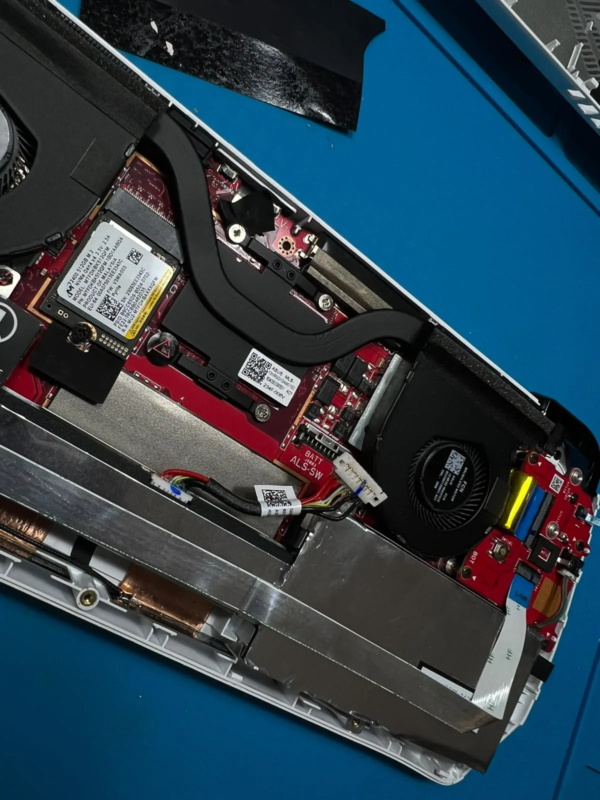
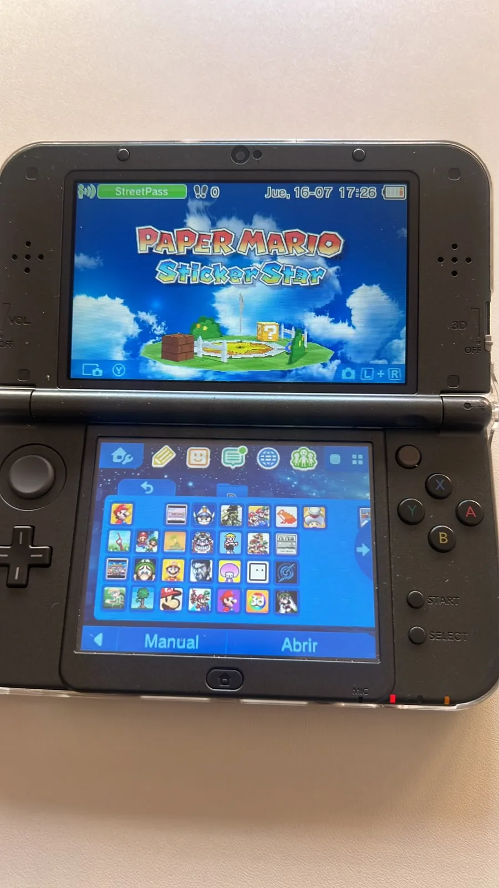
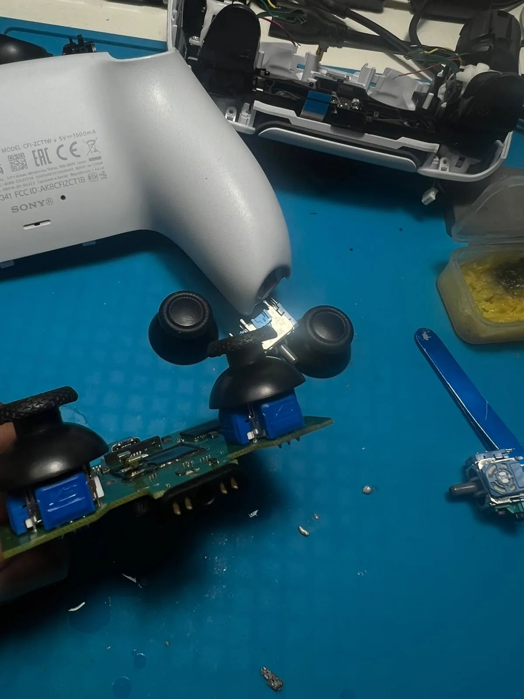

★★★★★
“Tenía dos mandos de Play 4 hechos polvo con drift. Me los han reparado en una tarde y muy buen trabajo; los dos mandos van de lujo ahora mismo. El trato muy bien y el precio perfecto. Volveré.”

DOCTORPLAYSERVICIO TÉCNICO · GETAFEReparamos PlayStation, Xbox, Nintendo Switch, mandos y accesorios con diagnóstico al momento y garantía.

Más de 270 reseñas de clientes
NO CAMBIES DE CONSOLA.
CAMBIA EL FINAL.

PS4, PS4 Pro y PS5. HDMI, lector, fuente, limpieza, temperatura y fallos de encendido.
VER PLAYSTATION ↗Una entrada directa según el equipo o el síntoma. Si no sabes qué falla, descríbenos lo que hace y lo revisamos contigo.

Selecciona el fallo. Prepararemos el mensaje para que hables directamente con el técnico.
Un proceso transparente para que sepas qué ocurre con tu equipo en cada momento.
Cuéntanos el problema por WhatsApp o teléfono.
Localizamos el origen real de la avería.
Te informamos antes de realizar el trabajo.
Probamos tu consola y la entregamos con garantía.
Reparación electrónica, conectores HDMI, sistemas de refrigeración, fuentes de alimentación y componentes de placa.



Información rápida. Si necesitas más detalles, escríbenos directamente.
PlayStation 4 y 5, Xbox One y Series S/X, Nintendo Switch, mandos y accesorios.
Realizamos una primera valoración directa. Las averías electrónicas complejas pueden necesitar pruebas adicionales.
Sí. Las intervenciones realizadas por Doctor Play incluyen garantía sobre el trabajo efectuado.
Estamos en Getafe, Comunidad de Madrid. Contacta antes de venir para confirmar la recepción.
Habla ahora con el técnico y cuéntanos qué le pasa.